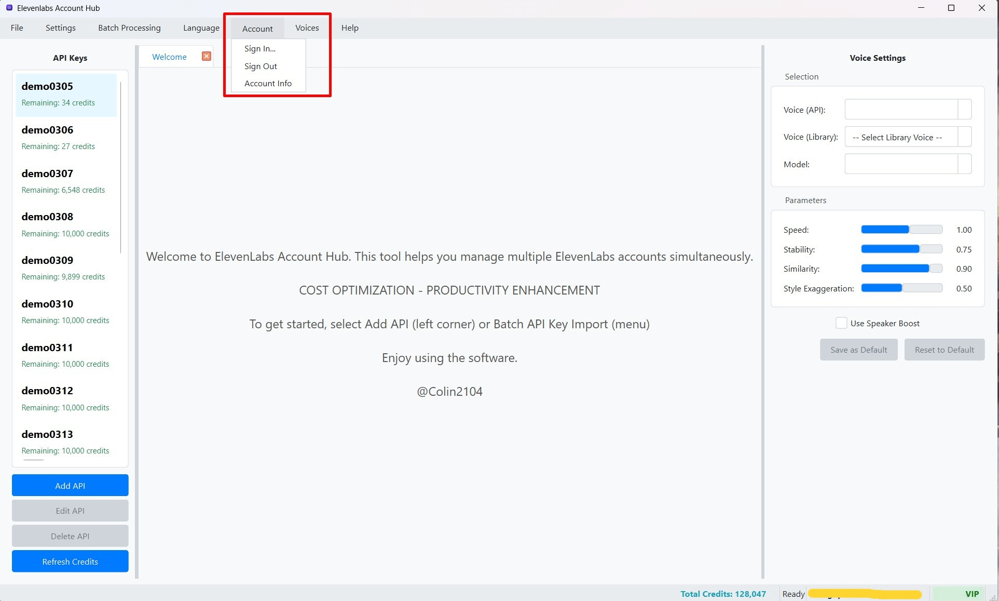

Đăng nhập và Đăng xuất Tài khoản
ElevenLabs Account Hub sử dụng hệ thống xác thực người dùng dựa trên tài khoản Google để quản lý quyền truy cập và các tính năng đặc biệt liên quan đến tài khoản (ví dụ: trạng thái VIP). Việc đăng nhập giúp cá nhân hóa trải nghiệm của bạn và mở khóa các tính năng nâng cao (nếu có).
1. Đăng nhập bằng Tài khoản Google
- Khởi động và Yêu cầu Đăng nhập:
- Khi bạn khởi động phần mềm ElevenLabs Account Hub, nếu bạn chưa đăng nhập, một thông báo hoặc cửa sổ có thể tự động xuất hiện, yêu cầu bạn đăng nhập để sử dụng đầy đủ các tính năng.
- Hoặc, bạn có thể chủ động bắt đầu quá trình đăng nhập bất cứ lúc nào bằng cách vào Thanh Menu, chọn "Account" > "Đăng nhập" (Sign In).
- Cửa sổ Đăng nhập: Một cửa sổ nhỏ có tiêu đề "Đăng nhập" (Login) sẽ xuất hiện.  (Hình ảnh: Cửa sổ Đăng nhập với nút "Đăng nhập bằng Google")
- Nhấn nút "Đăng nhập bằng Google" (Sign in with Google).
- Chuyển hướng đến Trình duyệt: Hành động này sẽ tự động mở trình duyệt web mặc định trên máy tính của bạn và chuyển bạn đến trang đăng nhập an toàn của Google.
- Xác thực với Google:
- Trên trang của Google, hãy chọn tài khoản Google mà bạn muốn sử dụng để đăng nhập vào ElevenLabs Account Hub.
- Nhập mật khẩu tài khoản Google của bạn (nếu được yêu cầu).
- Làm theo các bước hướng dẫn của Google để hoàn tất quá trình xác thực (ví dụ: xác minh hai yếu tố nếu bạn đã bật).
- Google có thể hiển thị một màn hình yêu cầu bạn cấp quyền cho ứng dụng "ElevenLabs Account Hub" (hoặc một tên tương tự) để truy cập một số thông tin cơ bản của tài khoản bạn (thường là địa chỉ email và thông tin hồ sơ công khai). Hãy xem xét và chấp nhận các quyền này để tiếp tục.
- Hoàn tất và Quay lại Ứng dụng:
- Sau khi Google xác nhận đăng nhập và cấp quyền thành công, bạn có thể thấy một thông báo trên trình duyệt cho biết bạn có thể đóng tab/cửa sổ đó và quay lại ứng dụng.
- Quay lại cửa sổ ứng dụng ElevenLabs Account Hub. Phần mềm sẽ tự động nhận diện trạng thái đăng nhập mới của bạn.
- Xác nhận Đăng nhập Thành công trong Ứng dụng:
- Địa chỉ email của tài khoản Google bạn vừa dùng để đăng nhập sẽ được hiển thị trên Thanh Trạng thái (Status Bar) ở góc dưới bên phải của cửa sổ chính.
- Các tùy chọn trong menu "Account" sẽ thay đổi: mục "Đăng nhập" sẽ bị vô hiệu hóa (mờ đi), trong khi các mục "Đăng xuất" (Sign Out) và "Thông tin Tài khoản" (Account Info) sẽ được kích hoạt.
- Các tính năng yêu cầu đăng nhập (ví dụ: kiểm tra trạng thái VIP, một số chức năng nâng cao) sẽ trở nên khả dụng.
Lưu ý về Quyền riêng tư và Bảo mật:
- Phần mềm ElevenLabs Account Hub sử dụng quy trình xác thực OAuth 2.0 tiêu chuẩn và an toàn của Google.
- Mật khẩu Google của bạn không bao giờ được chia sẻ trực tiếp với ứng dụng ElevenLabs Account Hub. Toàn bộ quá trình nhập mật khẩu và xác thực diễn ra trên trang web của Google.
- Ứng dụng chỉ nhận được một mã thông báo (access token) từ Google sau khi bạn đăng nhập thành công, cho phép nó xác minh danh tính của bạn và truy cập các thông tin cơ bản mà bạn đã đồng ý cấp quyền.
2. Đăng xuất khỏi Tài khoản
- Để đăng xuất khỏi tài khoản Google hiện tại đang liên kết với ứng dụng:
- Trên Thanh Menu, chọn "Account" > "Đăng xuất" (Sign Out).
- Một hộp thoại xác nhận có thể xuất hiện, hỏi bạn có chắc chắn muốn đăng xuất không. Xác nhận để tiếp tục.
- Sau khi Đăng xuất Thành công:
- Thông tin email trên Thanh Trạng thái sẽ biến mất hoặc hiển thị trạng thái "Chưa đăng nhập".
- Trạng thái VIP (nếu có) cũng sẽ được ẩn hoặc đặt lại.
- Các tùy chọn trong menu "Account" sẽ được cập nhật: mục "Đăng nhập" sẽ được kích hoạt trở lại, trong khi "Đăng xuất" và "Thông tin Tài khoản" sẽ bị vô hiệu hóa.
- Các tính năng yêu cầu đăng nhập hoặc trạng thái VIP có thể sẽ bị giới hạn hoặc không khả dụng cho đến khi bạn đăng nhập lại.
3. Xem Thông tin Tài khoản (Account Info)
Khi bạn đã đăng nhập, bạn có thể xem một số thông tin cơ bản về tài khoản người dùng của mình trong ứng dụng:
- Trên Thanh Menu, chọn "Account" > "Thông tin Tài khoản" (Account Info).
- Một hộp thoại hoặc cửa sổ nhỏ sẽ xuất hiện, hiển thị các thông tin như:
- Email: Địa chỉ email của tài khoản Google đã đăng nhập.
- Tên hiển thị (Display Name): Tên hiển thị công khai của tài khoản Google của bạn.
- Nhà cung cấp (Provider ID): Thường là
google.com. - Thời gian Đăng nhập Cuối (Last Login): Thời điểm bạn đăng nhập lần cuối vào ứng dụng.
- Trạng thái VIP và Ngày hết hạn: Nếu tài khoản của bạn có trạng thái VIP, thông tin này sẽ được hiển thị, bao gồm cả ngày hết hạn của gói VIP (nếu có). Xem thêm chi tiết tại Thông tin Tài khoản VIP.
4. Xử lý Tình huống Token Xác thực Hết hạn
Phiên đăng nhập của bạn vào ứng dụng được duy trì bằng một mã thông báo xác thực (authentication token) do Google cung cấp. Các mã thông báo này thường có một thời gian tồn tại nhất định (ví dụ: vài giờ hoặc vài ngày).
- Tự động Làm mới Token: Phần mềm ElevenLabs Account Hub được thiết kế để cố gắng tự động làm mới mã thông báo này trong nền trước khi nó hết hạn, nhằm duy trì trạng thái đăng nhập của bạn một cách liền mạch.
- Khi Token Hết hạn Hoàn toàn: Tuy nhiên, trong một số trường hợp (ví dụ: bạn không sử dụng phần mềm trong một thời gian dài, không có kết nối internet khi token cần làm mới, hoặc token bị thu hồi bởi Google vì lý do bảo mật), mã thông báo có thể hết hạn hoàn toàn. Khi điều này xảy ra:
- Phần mềm có thể hiển thị một thông báo lỗi như "Phiên đăng nhập đã hết hạn, vui lòng đăng nhập lại." (Session expired, please sign in again.) hoặc "Token không hợp lệ." (Invalid token.).
- Các tính năng yêu cầu đăng nhập sẽ bị vô hiệu hóa.
- Bạn sẽ cần thực hiện lại quá trình Đăng nhập như mô tả ở Bước 1 để nhận một mã thông báo mới và khôi phục phiên làm việc.
Việc này đảm bảo rằng chỉ những người dùng đã xác thực mới có thể truy cập các tính năng và dữ liệu liên quan đến tài khoản trong ứng dụng.